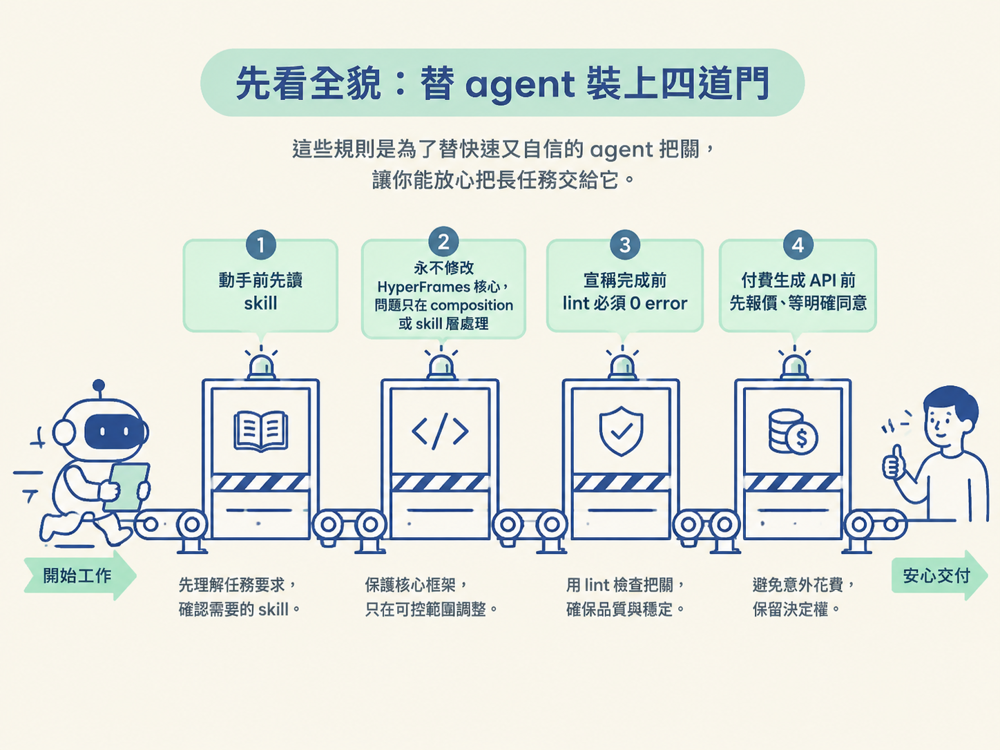
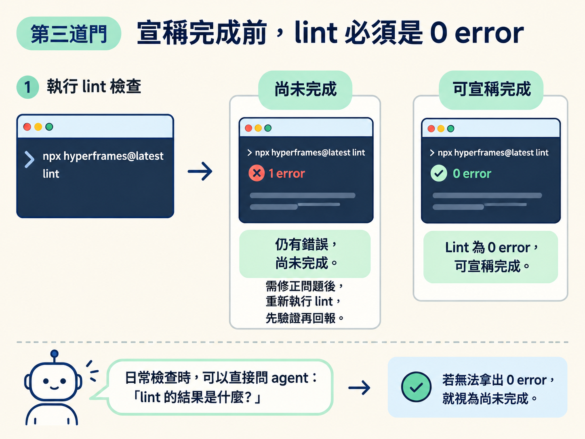
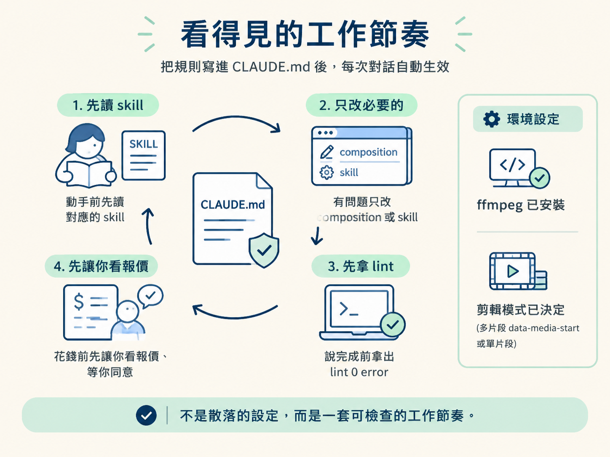

這一節的目標，是把工作區最後幾個容易出事的地方固定下來。完整流程可以想成一條生產線：agent 先讀規則，再開始製作；遇到問題時只修改你的 composition 或 skill，不碰引擎核心；宣稱完成前，必須通過 lint；如果要花錢呼叫生成 API，則先報價，等你明確同意。
這些規則不是要拖慢 agent，而是替它裝上煞車和檢查站。agent 做事很快，也可能很自信地把尚未驗證的 composition 說成完成，甚至在你不知道的情況下呼叫付費服務。把護欄寫進工作區後，你就能把長任務交給它，同時保留驗證成果與決定花費的權利。

CLAUDE.md。這些護欄多半會寫在其中，讓 agent 每次開工時都能讀到。如果只靠臨時提醒，規則很容易在長對話中被漏掉。請把下面的工作節奏寫進專案的 CLAUDE.md，讓它成為每次工作的固定入口：
接下來逐條檢查這四道門，確認它們各自擋住什麼問題。
只要請求涉及 HyperFrames、影片，或 HTML-to-MP4，agent 就必須先讀 helper skill，再做任何事。SKILL.md 裡整理了三層工作流程、16 條 lint 易錯點，以及多片段剪輯的樣式。少了這一步，agent 就可能依照預設反應直接開始寫，重新踩過已知的坑。
驗證時，請觀察工作的第一個動作：如果你請 agent 製作一支 HyperFrames 影片，而它還沒讀 skill 就開始寫程式，代表這道護欄沒有生效。把規則清楚寫進 CLAUDE.md，讓「先讀 skill」成為每次開工的第一步。
helper skill 是疊在 HyperFrames 上方的工作層，不是 HyperFrames 本身。當渲染出錯時，直覺可能是直接修改核心，先讓眼前的結果跑起來；但這會讓你的環境逐漸偏離官方版本。
一旦分岔，後續更新、除錯與重現問題都會變得混亂。因此，若問題出在你的製作流程，請修改 composition 或 skill；HyperFrames 核心則保持乾淨。這樣你的專案才比較容易重現，也比較容易升級。
這是判定「完成」的客觀檢查站。composition 可能已經顯示出畫面，但仍然藏著會讓渲染失敗或行為不確定的錯誤。每次 agent 宣稱完成前，都要執行：
npx hyperframes@latest lint這裡的標準不是「錯誤很少」，而是0 error。若還有 1 個 error，就不能算完成，必須先修正，再重新執行 lint。順序也不能顛倒：先驗證，再回報。
日常檢查時，可以直接問 agent：「lint 的結果是什麼？」如果它拿不出 0 error 的結果，就把這個工作視為尚未完成。

有些效果需要呼叫付費的生成 API，例如把一張圖做成旋轉的 3D 影片。遇到這類步驟時，agent 必須先說明成本，然後等待使用者明確同意，例如得到清楚的「可以」之後，才能發出任何一次付費 API 呼叫。
這道門不只是為了省錢，也是為了保留決定權。許多付費生成服務按次計價；如果 agent 自行重跑幾次，帳單可能在你沒有注意時增加。把「報價 → 等同意」寫進工作區規則，就像在錢包前面加上一道閘門。
四道護欄之外，還有兩個設定會影響每天的使用方式。
ffmpeg 是免費的選配工具，負責把 agent 做出的頁面轉成 MP4。官方將它列為「選配但建議」：沒有安裝時，某些流程會無法繼續；安裝後，你就能在本機把成果輸出成影片檔。若你每天都要產出成品，直接裝好會比較省事。
如果你想在 HyperFrames Studio 裡直接拖動剪輯點，預設應使用多片段的 data-media-start 樣式。若你只需要一個最終成品，不打算在時間軸上調整，單片段結構會比較單純。
這項選擇會影響 agent 產出的檔案結構，所以最好在開始工作前先說清楚：需要可拖動剪輯，就選多片段；只要單純渲染，就選單片段。
護欄設定完成後，工作區會有一個固定而且可檢查的節奏：
把這四條規則寫進專案的 CLAUDE.md 後，它們就會在每次對話中自動生效。此時工作區的成果不是一堆散落的設定，而是一套看得見的工作節奏：該讀的先讀、該檢查的先檢查，該花的錢由你決定。

至於 lint 會列出哪些錯誤，以及每一條要怎麼修，屬於 HyperFrames 實作層面的知識，會在後面的算圖節點詳細說明。這一節先把門檻立好即可。
工作區的四道門是：動手前先讀 helper skill；永遠不改 HyperFrames 核心；宣稱完成前執行
npx hyperframes@latest lint，並確認是 0 error；付費生成前先報價，等明確同意後才呼叫 API。工作區另外裝好 ffmpeg（選配但建議），並先決定要使用多片段的data-media-start，還是單片段。護欄不是用來限制 agent，而是讓你能放心把長任務交給它。
到這裡，整個工作區就緒了：角色分工、agent 與模型、引擎與 skill、轉錄與金鑰，以及最後的護欄都已經接上。下一節會回到 Tier 1 主線，把這些工具收斂成一套駕馭方法：one-shot、分鏡、執導三層，以及串起它們的 BIT 迴圈。